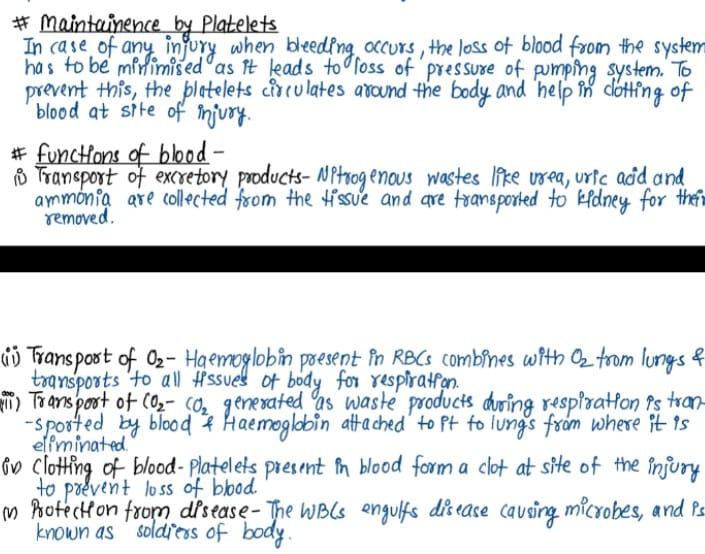
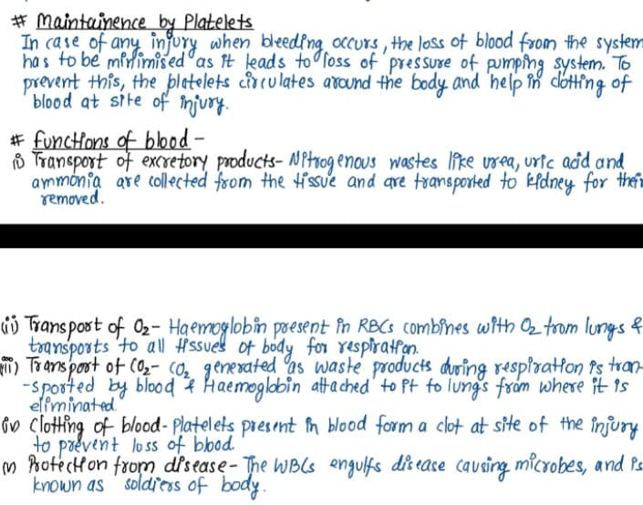
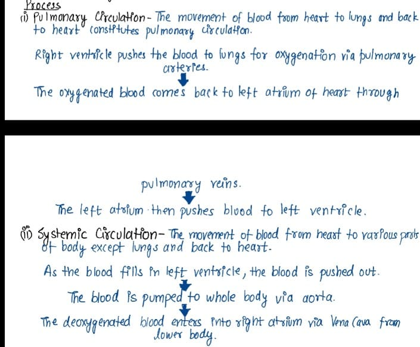
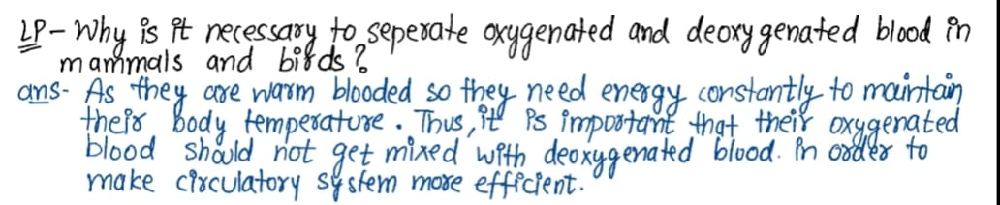
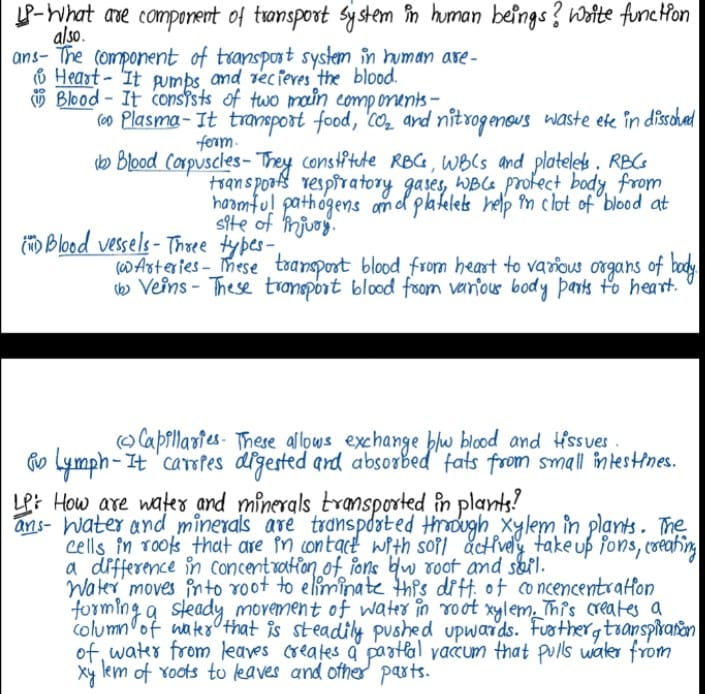
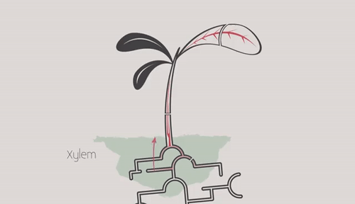
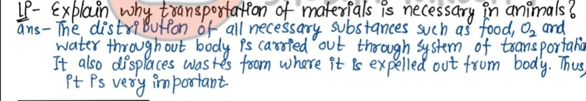
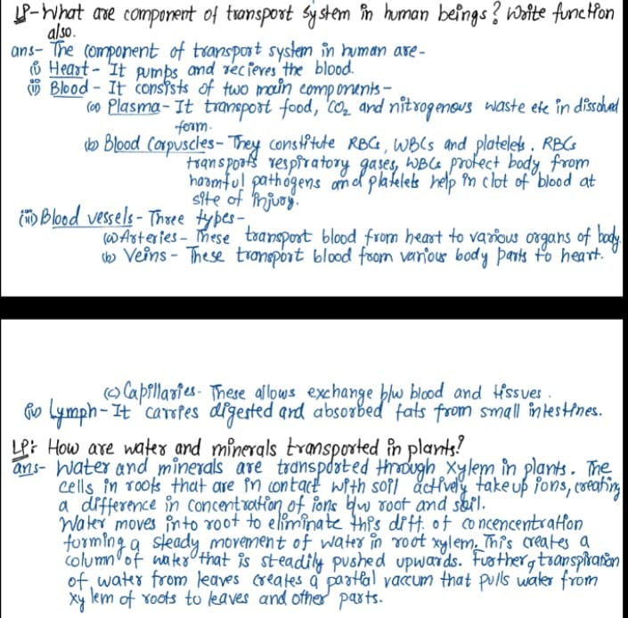
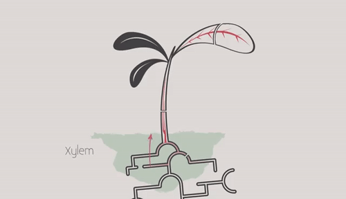
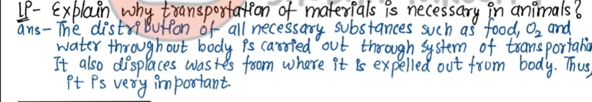

Transportation
In human beings
Blood
It is red coloured fluid connective tissue , which circulates in our body.
*Its red colour is due to presence of a pigment called Haemoglobin.
*The deficiency of haemoglobin in our body is referred to as anaemia.
 
LP :- Difference between Artery,Veins,Cappilary
Ans:-

LP :- Difference between Artery,Veins,Cappilary
Ans:-

# Heart
It is pumping machine that pushes out blood into the blood vessels and from there to different parts of body . It has four-chambers seprated by septum which prevent mixing of pure & impur blood.
Chambers-
ii) Atrium (Upper chambers) -
There are two atrium seperated by septum (dividing wall).
ii) Ventricles (lower chambers) -
The two inferior chambers of heart are right and left venticle.

# Flow of Blood in Humans
Human have double circulation ,which means that blood goes through heart twice to supply blood once around body.
Process

* Double circulated is considering as it prevents mixing of oxygeneted & deoxygenated blood .
LP:- What would be consequences of deficiency of haemoglobin in our bodies?
ans:- Haemoglobin efficiently binds with oxygen and transport to various parts od body . Deficiency of haemoglobin is referred to as anaemia. The consequences of such condition is that the blod is unable to carry oxygen required by body for respiration and produce energy. In anaemia ,the person feels weak,skin becomes pale etc.



 

LP :- How is food transported in plants ?
ans:- The transportation of food is done by phloem by utilising energy (ATP).The transport of solouble products (sugar) of photosynthesis from leaves to other part of plants is termed as translocation. Pressure generated by osmmotic pressure allows movement of food from phlem to tissue which have less pressure.



LP :- How is food transported in plants ?
ans:- The transportation of food is done by phloem by utilising energy (ATP).The transport of solouble products (sugar) of photosynthesis from leaves to other part of plants is termed as translocation. Pressure generated by osmmotic pressure allows movement of food from phlem to tissue which have less pressure.
